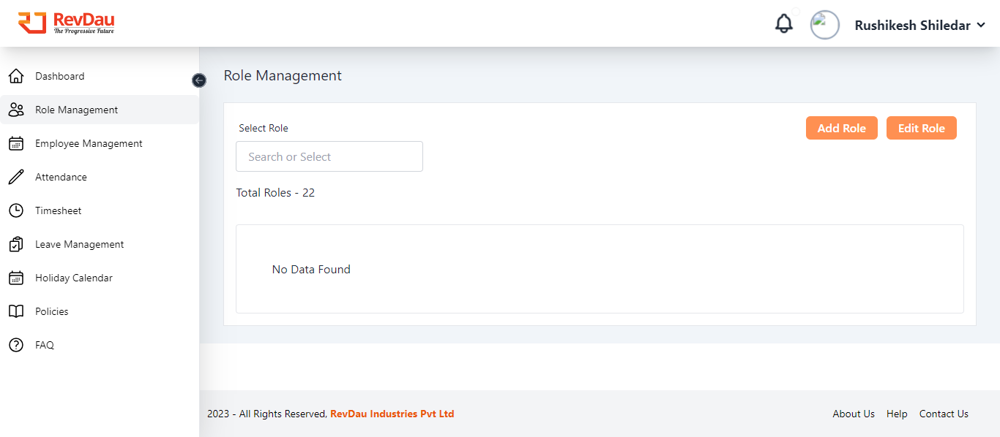
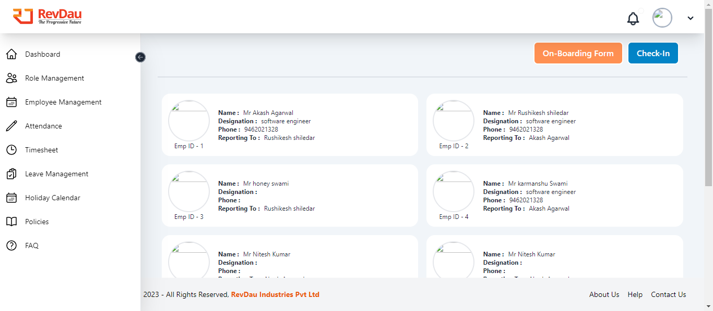
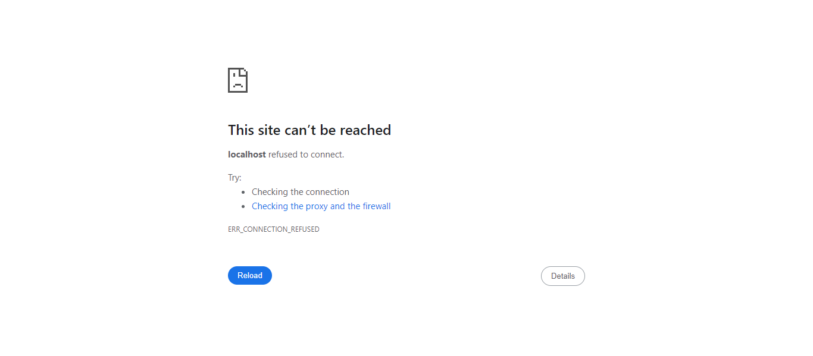

Started
Feb 21, 2024 03:21:13 pm
Ended
Feb 21, 2024 03:21:45 pm
Features Passed
0
Features Failed
1
Features
Scenarios
Steps
Timeline
Tags
| Name | Passed | Failed | Skipped | Others | Passed % |
|---|---|---|---|---|---|
| @NewRole | 0 | 2 | 0 | 0 | 0% |
| @Failed | 0 | 2 | 0 | 0 | 0% |
| @Desktop | 0 | 4 | 0 | 0 | 0% |
System/Environment
| Name | Value |
|---|---|
| User | 057-Kaveri |
| OsName | Windows 11 |
| Platform | windows |
| OsVersion | 10.0 |
| OsArchitecture | amd64 |
| BrowserName | chrome |
| BrowserVersion | 121.0.6167.185 |
-
Role management validation
3:21:14 pm / 00:00:31:523 Fail
Role management validation
02.21.2024 3:21:14 pm 02.21.2024 3:21:45 pm 00:00:31:523 · #test-id=1FailAdding New role validationstepDefinitions.BrowserHelper.setUpDesktop()When the user click on Microsoft Login button.Step skippedWhen the user login as "Admin"Step skippedAnd the user click next buttonStep skippedWhen the user entered passwordStep skippedAnd the user click SignIn buttonStep skippedAnd the user Checked in stay sign In checkboxStep skippedWhen the user clicked on no buttonStep skippedAnd the user Clicked on the Role Management ComponentStep skippedAnd the user Clicked on the add Role buttonStep skippedWhen user enter role name "Manager"Step skippedAnd user sets the following module permissions:Module Permissions Employee Management View Regularization Management Add Role Management Update Attendance Download Timesheet Upload Leave Management Upload Report View, Download Holiday View, Add, Update, Download Policy View, Add, Update FAQ View, Add, Update, Download, Upload Step skippedAnd user click on Submit Form ButtonStep skippedWhen user search the role name "Manager"Step skippedWhen user select the role ManagerStep skippedThen manager have the following permissions:Module Permissions Employee Management View Regularization Management Add Role Management Update Attendance Download Timesheet Upload Leave Management Upload Report View, Download Holiday View, Add, Update, Download Policy View, Add, Update FAQ View, Add, Update, Download, Upload Step skippedstepDefinitions.BrowserHelper.closeBrowser(io.cucumber.java.Scenario)screenshotstepDefinitions.BrowserHelper.deleteRole()FailAdding New role without giving any permissionsstepDefinitions.BrowserHelper.setUpDesktop()When the user click on Microsoft Login button.Step skippedWhen the user login as "Admin"Step skippedAnd the user click next buttonStep skippedWhen the user entered passwordStep skippedAnd the user click SignIn buttonStep skippedAnd the user Checked in stay sign In checkboxStep skippedWhen the user clicked on no buttonStep skippedAnd the user Clicked on the Role Management ComponentStep skippedAnd the user Clicked on the add Role buttonStep skippedWhen user enter role name "Director"Step skippedAnd user doesn't provide any module permissions:Step skippedThen Submit Form Button should be disabledStep skippedstepDefinitions.BrowserHelper.closeBrowser(io.cucumber.java.Scenario)screenshotFailAdding New role validationstepDefinitions.BrowserHelper.setUpDesktop()When the user click on Microsoft Login button.Step skippedWhen the user login as "Admin"Step skippedAnd the user click next buttonStep skippedWhen the user entered passwordStep skippedAnd the user click SignIn buttonStep skippedAnd the user Checked in stay sign In checkboxStep skippedWhen the user clicked on no buttonStep skippedAnd the user Clicked on the Role Management ComponentStep skippedAnd the user Clicked on the add Role buttonStep skippedWhen user enter role name "Manager"Step skippedAnd user sets the following module permissions:Module Permissions Employee Management View Regularization Management Add Role Management Update Attendance Download Timesheet Upload Leave Management Upload Report View, Download Holiday View, Add, Update, Download Policy View, Add, Update FAQ View, Add, Update, Download, Upload Step skippedAnd user click on Submit Form ButtonStep skippedWhen user search the role name "Manager"Step skippedWhen user select the role ManagerStep skippedThen manager have the following permissions:Module Permissions Employee Management View Regularization Management Add Role Management Update Attendance Download Timesheet Upload Leave Management Upload Report View, Download Holiday View, Add, Update, Download Policy View, Add, Update FAQ View, Add, Update, Download, Upload Step skippedstepDefinitions.BrowserHelper.closeBrowser(io.cucumber.java.Scenario)screenshotstepDefinitions.BrowserHelper.deleteRole()FailAdding New role without giving any permissionsstepDefinitions.BrowserHelper.setUpDesktop()When the user click on Microsoft Login button.Step skippedWhen the user login as "Admin"Step skippedAnd the user click next buttonStep skippedWhen the user entered passwordStep skippedAnd the user click SignIn buttonStep skippedAnd the user Checked in stay sign In checkboxStep skippedWhen the user clicked on no buttonStep skippedAnd the user Clicked on the Role Management ComponentStep skippedAnd the user Clicked on the add Role buttonStep skippedWhen user enter role name "Director"Step skippedAnd user doesn't provide any module permissions:Step skippedThen Submit Form Button should be disabledStep skippedstepDefinitions.BrowserHelper.closeBrowser(io.cucumber.java.Scenario)screenshot
-
configFileReader.ConfigFileReaderException
2 tests
configFileReader.ConfigFileReaderException
2 failedStatus Timestamp TestName Fail 15:21:23 pm stepDefinitions.BrowserHelper.deleteRole() Role management validation.Adding New role validation.stepDefinitions.BrowserHelper.deleteRole()Fail 15:21:39 pm stepDefinitions.BrowserHelper.deleteRole() Role management validation.Adding New role validation.stepDefinitions.BrowserHelper.deleteRole() -
org.openqa.selenium.WebDriverException
4 tests
org.openqa.selenium.WebDriverException
4 failedStatus Timestamp TestName Fail 15:21:14 pm stepDefinitions.BrowserHelper.setUpDesktop() Role management validation.Adding New role validation.stepDefinitions.BrowserHelper.setUpDesktop()Fail 15:21:23 pm stepDefinitions.BrowserHelper.setUpDesktop() Role management validation.Adding New role without giving any permissions.stepDefinitions.BrowserHelper.setUpDesktop()Fail 15:21:32 pm stepDefinitions.BrowserHelper.setUpDesktop() Role management validation.Adding New role validation.stepDefinitions.BrowserHelper.setUpDesktop()Fail 15:21:39 pm stepDefinitions.BrowserHelper.setUpDesktop() Role management validation.Adding New role without giving any permissions.stepDefinitions.BrowserHelper.setUpDesktop()